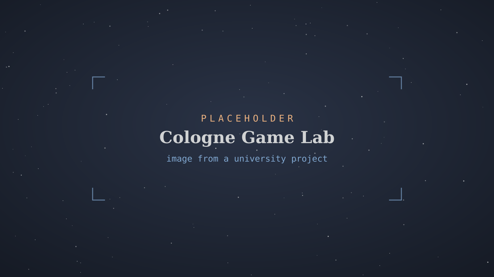
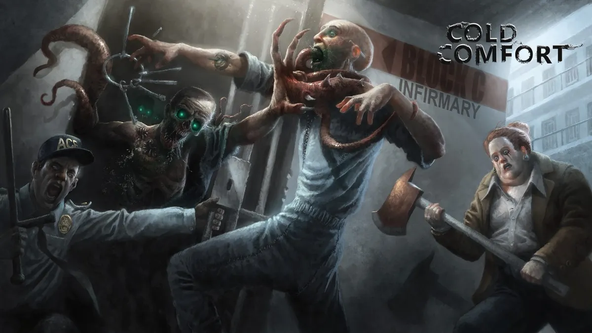
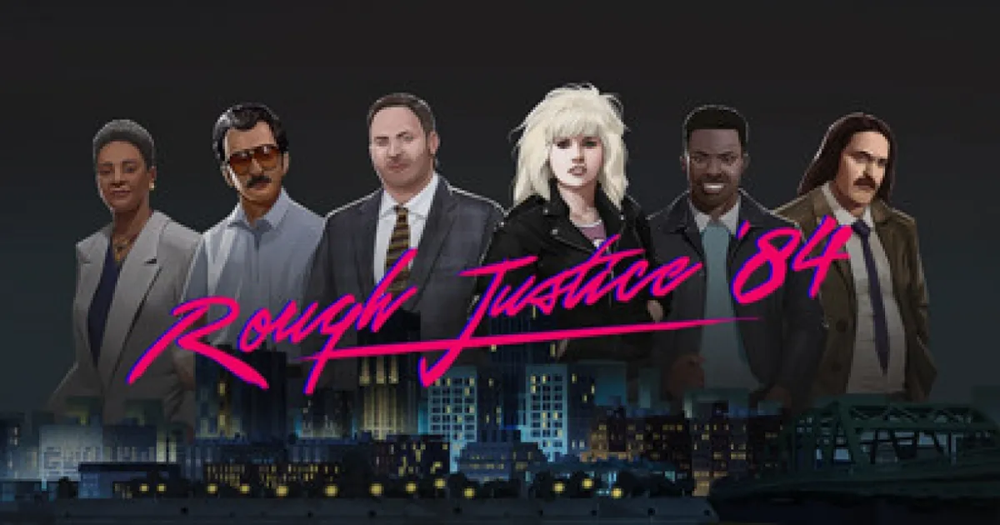
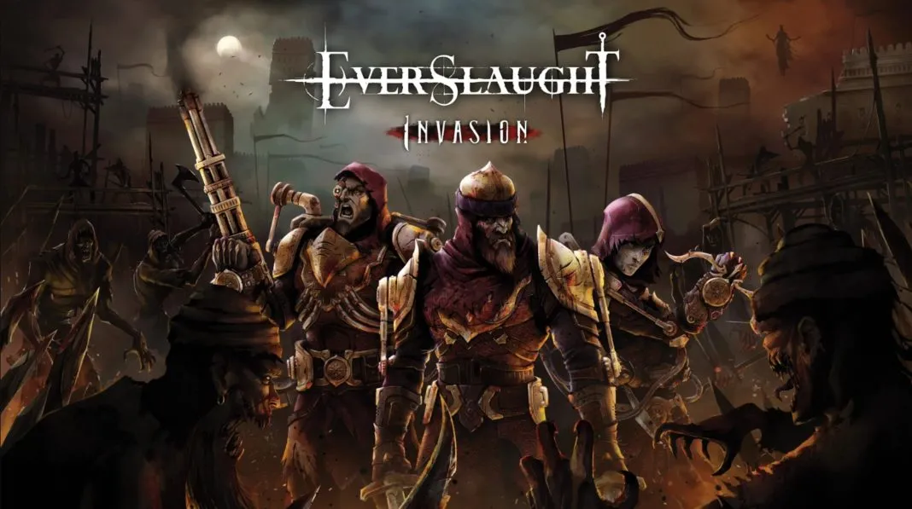
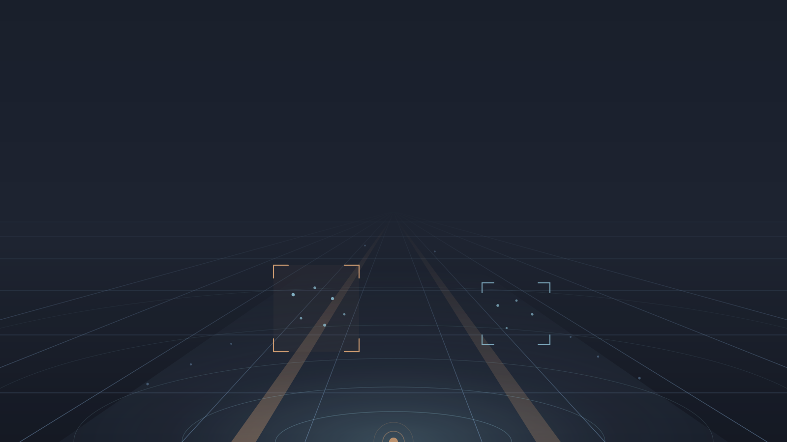

Cologne Game Lab
BA Digital Games, Game Programming — TH Köln
Seven semesters of project-based games education at TH Köln's Cologne Game Lab, taught and examined in English.

Software engineer
Six years of cross-platform C/C++ development — low-level systems programming on Windows and Linux, real-time and simulation software, and test automation.
View My Work
I'm a software engineer with six years of experience in cross-platform C/C++ development. My focus is low-level systems programming across Windows and Linux, real-time and simulation software, and test automation. I get up to speed in unfamiliar domains quickly — moving from games into automotive simulation is the clearest evidence of that.
Today I work on sensor-simulation software built on Unreal Engine 5, used to validate ECUs and automated driving functions. Before that I spent five years shipping games: network-synchronised systems for standalone VR, a data-driven C++ core for a published Unreal title, and the prototypes that got both projects funded. I've led a small team, designed technical hiring tests, and worked remotely with international colleagues throughout.
I studied Digital Games at the Cologne Game Lab (TH Köln) — a BA, followed by master's coursework with a computer science focus. Outside work I'm interested in real-time rendering and graphics APIs, home-labbing and network engineering, and electrical engineering and physics.

BA Digital Games, Game Programming — TH Köln
Seven semesters of project-based games education at TH Köln's Cologne Game Lab, taught and examined in English.

Gameplay Programmer — Prototype
Asymmetric 5v5 PvP shooter prototype in Unreal Engine 4, built at Gamma Minus and presented to publishers at the Gamescom Business Arena.
Self-employed — C++ / Unreal Engine 4
Independent C++ and Unreal Engine 4 development, building the prototypes that two studio productions grew out of.

Lead Programmer — Gamma Minus UG
Agency management game built in Unreal Engine 4 with an international remote team. Published by Daedalic Entertainment.

Software Engineer — MobX Games
VR action title for Meta Quest 2, published by Fast Travel Games. Network-synchronised real-time systems inside a standalone headset's memory and performance budget.

Software Engineer, Simulation & Validation — dSPACE
Ongoing development of AURELION, dSPACE's sensor-simulation software built on Unreal Engine 5, used to validate ECUs and automated driving functions.
Five chapters, one timeline — from university productions to automotive sensor simulation.
Takes over scrolling — leave any time with Esc or the exit button.
SEP 2015 — JUL 2019
BA Digital Games, Game Programming — TH Köln
A degree built on shipped team projects rather than coursework alone.
Five semester-long team productions, each built by a cross-disciplinary group of programmers, designers and artists around a different design brief.
A full semester dedicated to a single self-directed production — the largest individual module of the degree at 25 ECTS.
Thesis on character scale and movement constraints in digital games — how body proportions and traversal rules interact with level geometry.
FEB 2019 — FEB 2021
Self-employed — C++ / Unreal Engine 4
Built the prototypes that secured funding and led to two permanent studio roles.
Independently developed the prototype that secured project funding and grew into a shipped commercial title.
Prototype built around asymmetric multiplayer mechanics, with lobby and session flow on the Steam Online Subsystem.
MAR 2021 — FEB 2022
Lead Programmer — Gamma Minus UG
Technical lead on a shipped UE4 title, from data-driven core architecture to team leadership.
Designed the C++ core simulating time and resource flows, with modular systems for contracts, dialogue and agent management.
Led a three-person junior team while building the tooling that removed manual setup work from the production pipeline.
FEB 2022 — APR 2023
Software Engineer — MobX Games
Agent AI and P2P network synchronisation under standalone VR constraints.
Built a behaviour-tree-based framework for autonomous agents, covering navigation and rule-driven spawning.
Implemented peer-to-peer state replication over Photon Fusion, kept stable within the tight budgets of a standalone headset.
MAY 2024 — PRESENT
Software Engineer, Simulation & Validation — dSPACE
Cross-platform C++ systems work for automotive sensor simulation on Unreal Engine 5.
Designed and built a cross-platform C/C++ library for GPU and monitor detection on multi-GPU simulation systems, now used across several products in the toolchain.
Real-time rendering integration on Unreal Engine 5, alongside cross-platform support and build automation.
The best way to reach me is on LinkedIn — messages there land directly with me.
Message me on LinkedInYou can also find my code on GitHub.